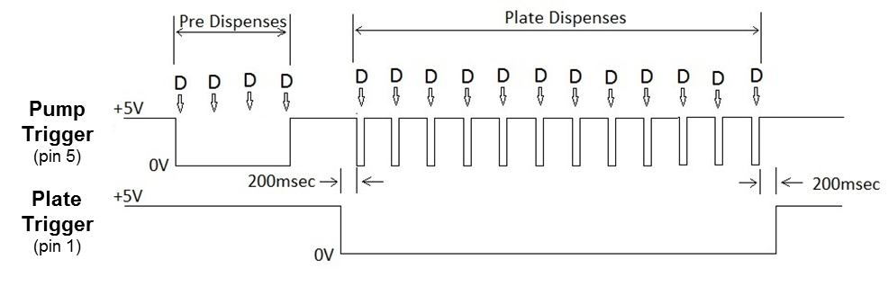

2. Firmware Specification¶
2.1. Copyright¶
Copyright Creare LLC 2016. This software specification is proprietary and should be considered confidential. Reproduction or distribution prohibited without written permission from Creare.
2.2. Revision Log¶
| Date | Author | Changes |
|---|---|---|
| 3/3/2017 | MCR | Added Laser Power section. Keep laser on all the time except during get_dark_level(). Added trigger_delay to Static Parameters. Added trigger_delay to Record Signals in monitor_dispense(). |
2.3. Introduction¶
The following sections describe the functionality that is required on the DMS controller. I have written this as a series of funtions for clarity (in my mind). The actual firmware and commands may be structured however you like, as long as it can do these things.
2.4. Identification¶
The DMS should be able to return a unique identifier that distinguishes it among all others.
idstr = id()- Return unique identifier string.
2.5. Laser Power¶
The laser should be powered on whenever the DMS is powered, except during get_dark_level() (Calibration). This is because diffraction patterns in the laser sheet shift during laser warmup for at least 10s of seconds, leading to unstable readings. We want to keep the laser at steady thermal equilibrium.
2.6. Alignment¶
The DMS should stream the sensor data to the host at a minimum of 5 Hz until a command is received to stop this mode.
align(resolution)- Stream the sensor image down-sampled to
resolutionpixels at 8-bit. The range ofresolutionis [3, 384], and the streamed image is a vector ofresolution8-bit integer values. stop_align()- Stop streaming data.
2.7. Recording Raw Data¶
The most basic function of the DMS will be to stream a segment of 1-D video data when it receives a command. It should also stream the value of the two trigger inputs at the time of each video data frame.
stream_data(duration)- Stream raw video data and two trigger input values to host computer at
frame_ratefordurationms.
2.8. Global Parameters¶
Configuration Parameters should be set by the host application. These parameters define the dispense cycle and fault detection mode, and must be set before fault detection can occur. Once set, they remain constant until explicitly reset.
| Parameter | Description |
|---|---|
stream_diameter |
The nominal diameter of the dispense stream in mils (.001 ”). Range: [1, 50]. Typical values: 7 (1 uL cassette) and 14 (5 and 10 uL cassettes). |
n_dispenses |
The number of wells dispensed by a given channel on each microplate. Range: [1, 192]. Typical values are 12, 48, and 192. |
dispense_time |
The duration that the pump runs while dispensing a single well, in ms. Range: [1, 8000]. |
dispense_period |
The time interval at which wells are dispensed in ms. This value must be greater than dispense_time. Range: [1, 8150]. |
n_ref_history |
The number of previous plates to include in the calculation of reference features for Fault Detection. Default is 10. |
ref_mode |
Can be 'user' or 'history', and determines whether wells are compared to a user specified reference dispense or to a median of the recent plate dispenses for Fault Detection. Default is 'history'. |
Static Parameters are expected to be constant and should be invisible to the end user.
| Parameter | Value | Description |
|---|---|---|
frame_rate |
1000 | Sensor frame rate (Hz) |
pixel_pitch |
15.75 | Sensor pixel pitch (400 / 25.4, pixels per mm) |
n_pixels |
384 | Number of active pixels on sensor. (pixels) |
cal_pin_diameter |
0.80 | Calibration fixture pin diameter (mm) |
n_cal_frames |
100 | Number of frames to integrate when collecting background and calibration images. Integer. |
filter_pix |
7 | Number of pixels for smoothing filter window. Odd integer. (pixels) |
cal_min_peak |
0.1 | Minimum height of calibration peaks. (unitless) |
min_stream_amp |
0.1 | Smallest amplitude to consider stream present. (mm) |
max_stream_width |
1 | Max stream width considered to be real. (mm) |
rel_min_illum |
0.25 | The minimum fraction (of median) considered illuminated in a background image. |
abs_min_illum |
128 | Absolute minimum acceptable background illumination. A 12-bit integer. (counts) |
illum_dev_warn |
0.5 | The maximum relative deviation in background illumination that will not result in a warning. |
max_dark_level |
256 | The maximum dark level that won’t throw an error. (counts) |
trigger_delay |
14 | Delay before acting on a received trigger. (ms) |
2.9. Calibration¶
Before monitoring dispenses, the DMS must collect or compute the Calibration Parameters. These should be stored in non-volatile memory and remain constant until calibration is run again.
| Parameter | Description |
|---|---|
dark_level |
A single 12-bit integer representing the mean sensor signal in the absence of light. Defaults to 0. |
cal_background |
A vector of 384 integers (12-bit) representing the nominal illumination in the absence of streams or any other obstruction, at the time of system calibration. |
cal_image |
A vector of 384 values (12-bit integer mapped to [-1,1]) representing the image with the calibration fixture in place. |
cal_pix_range |
A pair of integers representing the range of pixels (first, last) that are illuminated by the laser. |
cal_bin_edges |
A vector of 9 integers (units: pixels) that partition the 384 pixel sensor into 8 bins centered on the 8 dispense streams. The 8 bins are contiguous, but do not necessarily span the entire sensor. |
cal_center |
A vector of 8 values that define the nominal center points of the 8 channels using the calibration fixture. Units: pixels. Minimum precision: 0.01 pixels. |
cal_sigma |
A vector of 8 values that define the nominal width of the 8 channel shadows using the calibration fixture. Units: pixels. Minimum precision: 0.01 pixels. Maximum value: 48. |
cal_amp_scale |
A vector of 8 values that define the shadow amplitude scale for each channel (mm/pixel). Minimum precision 0.001. Typical value: 0.25. |
cal_lateral_scale |
A vector of 8 values that define the shadow lateral scale for each channel (mm/pixel). These scale factors are applied to lateral stream displacements, and account for the physical pixel pitch as well as the varying optical magnification across the sensor. |
cal_sigma_scale |
A vector of 8 values that define the shadow sigma scale for each channel (mm/pixel). These scale factors relate the shadow width to stream diameter, and account for the physical pixel pitch as well as the varying optical magnification across the sensor. |
The first step for initial sensor calibration is to determine the dark level, the voltage the sensor outputs in the absence of light.
get_dark_level()- This should be done with the sensor covered. Turn the laser off. Collect
n_cal_framessuccessive 12-bit images from the sensor atframe_rate, take the mean in the time dimension, then the median in the spatial dimension. If this value is greater thanmax_dark_level, throw an error'Sensor is not dark.’. Otherwise, assign to thedark_levelparameter as an integer. Turn the laser back on.
The next step in calibration (and the first step in any subsequent data collection routine) is to collect a fresh background image. This should be done with the sensor illuminated by the laser, with no obstructions. This data is used to account for variations in laser power, dirty optical windows, etc.
set_background()- Collect
n_cal_framessuccessive raw 12-bit images from the sensor atframe_rate, take the mean in the time dimension, subtractdark_level(saturate at 0), and assign this 384 pixel vector tocandidate_bg. - If the median value of
candidate_bgis less thanabs_min_illum, throw an warning‘Insufficient background illumination.’and exit the function. Otherwise, assigncandidate_bgtocal_background. - Find the median value in
cal_backgroundand multiply this byrel_min_illum. Find the first and last of the 384 pixels that are illuminated at greater than this value. Assign these two indices tocal_pix_range.
- Collect
After this initial background has been collected, all subsequent data collection uses the following transform to correct each image for the known background:
image = collect_image(background)- Collect one 384 pixel frame from the sensor, subtract
dark_levelwith saturation at 0, and call the resultdata. Then,image = 1 – (data ./ background). Set allimagepixels outside ofcal_pix_rangeto zero. The result is a 384 pixel vector with values that, under normal circumstances, lie in the range of [ 0.05, 1.0]. However, an invalid background collection can make it take on negative values, and we want to make sure not to mask this problem by saturation. I think it would suit our purposes to makeimagea 12-bit value mapped to [-1, 1].
The next step is to perform the actual calibration. This is done with the calibration fixture in place. It has metal pins of known diameter in the nominal stream locations.
calibrate()Collect
n_cal_framessuccessive images from the sensor atframe_rate(using thecollect_image(cal_background)transform), take the mean in the time dimension, and assign the result tocal_image.Lowpass filter
cal_imagewith afilter_pixwide, square, centered moving average (zero padded). Be sure there is no filter delay. For example:filtered_image = conv( cal_image, ... ones(1,filter_pix)/filter_pix, 'same');
In
filtered_image, find all peaks with minimum height ofmin_cal_peakand minimum inter-peak spacing offilter_pix. There should be exactly 8 peaks found. If not, throw warning‘8 peaks not found in calibration image.’and exit the function.Define
cal_bin_edgesto form 8 contiguous bins with edges centered between the peaks found above. The first and last edge are defined by requiring that the first and last peaks are centered in their bins. If these outer edges fall outside ofcal_pix_range, throw warning‘Calibration not centered on sensor.’and exit the function.Within each of the 8 bins of the unfiltered
cal_image, calculate the following quantities (Matlab syntax here and throughout the document):for i = 1:8 % step through bins/streams pix = bin_edges(i):bin_edges(i+1) Y2 = cal_image(pix) .* abs(cal_image(pix)) sY2 = sum(Y2) cal_center(i) = sum( Y2 .* pix ) ./ sY2 d2 = ( pix - cal.center(i) ).^2 cal_sigma(i) = sqrt( sum( Y2 .* d2 ) ./ sY2 ) cal_rss(i) = sqrt( sY2 ) cal_amp_scale(i) = cal_pin_diameter / cal_rss(i) cal_sigma_scale(i) = cal_pin_diameter / cal_sigma(i) end sigmaMag = cal_sigma ./ cal_sigma(1) magnification = polyval( polyfit(1:8,sigmaMag,2), 1:8) cal_lateral_scale = 1 ./ (magnification * pixel_pitch)
2.10. Extracting Signals¶
The raw 1D video data collected during a dispense must be reduced to three time-domain Signals for each of the 8 dispenser channels. Each is an 8 x n_frames array with one value corresponding to each video frame for each of the 8 channels. When monitoring a dispense, only these three signals need to be stored for fault detection analysis. If these signals can be computed in real time, the raw video data need not be stored.
| Signal | Description |
|---|---|
signal_amp |
The root-sum-squated (rss) value of the unitless signal amplitude within each channel bin. Each channel is calibrated by multiplication with the appropriate entry in cal_amp_scale, and final units are mm. Maximum expected value is 3 mm. Minimum precision is 0.001 mm. |
signal_disp |
The lateral displacement of each stream from its nominal position. Each channel is calibrated by multiplication with the appropriate entry in cal_lateral_scale, and final units are mm. Maximum expected value is 1.5 mm. Minimum precision is 0.001 mm. |
signal_width |
The width of the stream for each channel. This is signal_sigmal calibrated by multiplication with the appropriate entry in cal_sigma_scale, and final units are mm. Maximum expected value is 3 mm. Minimum precision is 0.001 mm. |
While recording data during a dispense, the three signals are calculated as follows:
for t = 1:n_frames % step through time
image = collect_image(tmp_background) % transform raw sensor frame
for i = 1:8 % step through bins/streams
pix = bin_edges(i):bin_edges(i+1)
y2 = image(pix) .* abs(image(pix))
sy2 = sum(y2)
ssq = sign(sy2) * sqrt(abs(sy2))
signal_amp(i,t) = ssq * cal_amp_scale(i)
if signal_amp(i,t) < min_stream_amp
center(i,t) = nan
signal_sigma(i,t) = nan
else
center(i,t) = sum( y2 .* pix ) ./ sy2
d2 = ( pix – center(i,t) ).^2
sigma = sqrt( sum( y2.*d2) ./ sy2 )
signal_width(i,t) = sigma * cal_sigma_scale(i)
if signal_sigma(i,t) > max_stream_sigma
center(i,t) = nan
signal_sigma(i,t) = nan
end
end
end
end
After recording an entire dispense we must decide the nominal positions of the streams so we can calculate their absolute lateral offset from nominal. We assume that the tips are spaced the same as the calibration cassette, but possibly offset.
mean_center = nanmean(center,2) % 8 bins/streams
offset = median( mean_center – cal_center )
disp_pix = bsxfun(@minus, center, cal_center) – offset
signal_disp = bsxfun(@times, disp_pix, cal_lateral_scale)
2.11. Monitor Dispense¶
When the DMS receives a monitor_dispense() command, it should go through a series of automated steps to wait for the dispense and then collect Table 2.6 Dispense Data, which should be stored for possible download to the host if requested. This data may be discarded when a new monitor_dispense() command is received.
| Data | Description |
|---|---|
signals |
A data structure that includes all the Signals computed over the duration of the dispense. |
triggers |
An array of timestamps of the alternating falling and rising edges of the pump trigger over the duration of the dispense (i.e. during the interval that the plate trigger is active). The number of falling and rising edges expected is n_dispenses each. |
info |
A data structure that stores all warnings or informational messages thrown during the dispense. |
features |
A data structure that stores all the features computed from signals during the dispense as listed in Table 2.8 Feature specifications. |
faults |
A data structure that stores all the fault information computed for the dispense as listed in Table 2.11 Fault Detection Data. |
The procedure is defined as follows:
monitor_dispense()Prepare for Background Immediately upon receiving the command, the DMS should begin recording raw 12-bit images (without the
collect_imagetransform) into a rolling buffer that isn_cal_frameslong.Wait for Trigger The DMS has two trigger inputs illustrated in Fig. 2.1. The pump trigger is active whenever the dispense pump is running (i.e. fluid is flowing). The plate trigger is active whenever a plate is being dispensed. This allows us to distinguish when the pump is running for reasons other than dispensing a plate, such as a purge or pre-dispense. Both triggers are normally high, active low. The DMS should wait until it receives a plate trigger, then proceed immediately to the next step.
Fig. 2.1 BioTek Trigger Diagram.
Collect Background After receiving the plate trigger, take the mean of the rolling buffer along the time dimension, subtract
dark_level, and store this array in bothtmp_backgroundand info.background.Validate Background Compare
tmp_backgroundtocal_backgroundto be sure that it is acceptable. This task is low priority and can happen after the dispense is complete. For each of the two background images, compute the mean value within each of the 8 bins defined bycal_bin_edges. If these values differ by more thanillum_dev_warn(relative) for any bin, throw a warning stating the bin number. If any of the 8 values fortmp_backgroundare less thanabs_min_illum, throw a warning stating the bin number. These warnings should be stored ininfo.Record Signals When the first pump trigger is received (with the plate trigger already active) begin recording signals as described in Extracting Signals, normalizing with
tmp_background. Continue until the plate trigger becomes inactive. Also record timestamps for the rising and falling edges of the pump trigger, delayed bytrigger_delay. (This delay accounts for the lag between the electrical trigger signals and the physical fluid stream.) These triggers will be used to determine theduring_dispense(pump trigger low) andbetween_dispense(pump trigger high) signal segments used in Computing Features.Compute Features Compute features as described in Computing Features.
Detect Faults Compute and store faults as described in Fault Detection.
Store History Store the
plate_features(see Computing Features) from the current dispense inhistory(see Fault Detection).
2.12. Computing Features¶
Each well on a microplate is characterized by nine features that are used to determine if the well dispense was faulty. Each feature is a single number and is calculated using one of the three time signals (signal_amp, signal_disp, signal_width). With the exception of the amp_corr feature (see Computing amp_corr feature), only the row of the time signal corresponding to the channel that the well is in is used when calculating the feature. Additionally, only certain frames of the time signal are used. In some cases, the frames or time interval used is during the time period that the well is being dispensed (during_dispense), in other cases it is the time after the dispense of the well, but before the next well dispense (between_dispense). Finally, it could also be the combination of during_dispense and between_dispense.
2.12.1. Determining during_dispense and between_dispense time intervals¶
The time intervals, during_dispense and between_dispense, can be determined using the plate trigger and the pump trigger. All intervals are while the plate trigger is low. Changes in the value of the pump trigger mark the boundries between the during_dispense and between_dispense time intervals. As such these intervals are strictly not overlapping. The pump trigger is high for the during_dispense time interval and low for between_dispense. For a given well dispense, the during_dispense interval precedes the between_dispense interval corresponding to the same well dispense.
The end of the between_dispense interval of the last well dispense is the only point in time that can not be determined by a change in the pump trigger. This is because the pump trigger does not transition back to low to mark this end point. It stays high up through the end of the plate dispense when the value of the plate trigger becomes high again. Because it is desirable to have all between_dispense time intervals be roughly the same duration, it is necessary to determine this end point by averaging the duration of all previous between_dispense intervals from the same plate dispense. Table 2.7 depicts the pump trigger timeline and indicates where the various intervals fall for each of the n_dispenses well dispenses of a single plate.
| Time | Interval | Description |
|---|---|---|
t_start |
Plate trigger goes LOW | |
t_low(1) |
Pump tigger goes LOW | |
during_dispense |
well dispense #1 | |
t_high(1) |
Pump trigger goes HIGH | |
between_dispense |
well dispense #1 | |
t_low(2) |
Pump tigger goes LOW | |
during_dispense |
well dispense #2 | |
t_high(2) |
Pump trigger goes HIGH | |
between_dispense |
well dispense #2 | |
| … | … | … |
t_low(n_dispenses) |
Pump tigger goes LOW | |
during_dispense |
last well dispense of plate (# n_dispenses) | |
t_high(n_dispenses) |
Pump trigger goes HIGH | |
between_dispense |
last well dispense of plate (# n_dispenses) | |
t_high(n_dispenses) + avg(t_low(i+1) – t_high(i)) |
END of last between_dispense No event. Must be computed using average of the previous between_dispense durations. |
|
t_end |
Plate trigger goes HIGH |
2.12.2. Computing standard features¶
In general, computing the value of a feature for a well involves the following steps:
- Select the signal corresponding to the feature (
signal_amp,signal_disp,signal_width). - Select the row of the time signal corresponding to the well’s channel.
- Select the frames (columns) of the time signal corresponding to the appropriate time interval (
during_dispense,between_dispense). - Compute the mean or standard deviation of the selected portion of the time signal.
- Optionally, normalize and then take the base 10 logarithm. Whether or not to do this step is indicated in the Feature Specifications table (under the column “Normalized”).
- Normalization: divide by the median (across all
8 x n_dispenseswells on the entire plate) of the result from the previous step. - Then, compute the base 10 logarithm of the result from normalization.
- Normalization: divide by the median (across all
The details of this process for each of the nine features can be found in Feature Specifications. The time signal and the time interval for the amp_corr feature are listed in Feature Specifications. However, after step 3, the amp_corr computation is different from the other features and is specified in Computing amp_corr feature.
| Feature | Signal | Time Interval | Normalized | Operations |
|---|---|---|---|---|
disp_mean |
signal_disp |
both | No | mean |
disp_sdev |
signal_disp |
both | No | standard deviation |
width_mean |
signal_width |
both | No | mean |
width_sdev |
signal_width |
both | No | standard deviation |
width_mean_n |
signal_width |
both | Yes | mean, normalize, log |
amp_mean_btw_n |
signal_amp |
between_dispense |
Yes | mean, normalize, log |
amp_mean_dur_n |
signal_amp |
during_dispense |
Yes | mean, normalize, log |
amp_mean_dur |
signal_amp |
during_dispense |
No | mean |
amp_corr |
signal_amp |
during_dispense |
No | See below. |
2.12.3. Computing amp_corr feature¶
The amp_corr feature is calculated from the signal_amp signal. It is a measure of the similarity between the signal in one channel to the median signal (amp_med) across all of the channels. It can range from 0.0 to +2.0. As with the other features, there is a single amp_corr value for each well on a plate. What follows is a description of the calculation of a single amp_corr value for a well in channel ch. The frames corresponding to the during_dispense time interval of the dispense event of this well will collectively be referred to as during_dispense_frames. Therefore, signal_amp(ch, during_dispense_frames) would be a 1-dimensional time signal whose length is the number of frames in the particular during_dispense interval.
Calculation of amp_med which is a 1-dimensional signal with the same length as signal_amp(ch, during_dispense_frames):
for t = during_dispense_frames % step through frames that are part of this well dispense event's during_dispense interval
amp_med(t) = median(signal_amp(:,t)) % for frame t compute median value of signal_amp across all channels
end
Note, amp_med need only be computed once for every well dispense event. It can be resued for calculation of each of the channel’s particular amp_corr feature.
Calculation of amp_corr for channel ch:
S = signal_amp(ch, during_dispense_frames) - mean(signal_amp(ch, during_dispense_frames))
M = amp_med - mean(amp_med)
amp_corr = 1 - ( ( S*M' ) / ( sqrt(S*S') * sqrt(M*M') ) ) % S and M are assumed to be row vectors so S * M' is the dot product
2.12.4. Computing plate_features¶
The plate_features is a data structure that contains 8 values for each feature, defined as the median value for that feature within each channel. Compute this each time a plate is processed. It can be overwritten for each new plate.
2.13. Fault Detection¶
Dispense faults are detected at the well level by comparing its feature values to one of the following:
A pre-defined absolute value. This allows us to catch things that are completely out-of-bounds. However, we need to know what the feature value should be. Depending on the feature, this might be a function of the Configuration Parameters, the cassette in use, the fluid properties, etc. So these absolute metrics are difficult to determine and not very effective.
A reference value based on either:
- a validated reference dispense designated by the user or
- the median value from a few of the preceeding plate dispenses.
This allows us to catch changes that occur over time without needing to know anything about the dispense configuration.
The median value among wells on the current plate. This allows us to catch individual well dispenses or channels that look different from others on the plate without needing to know anyting about the dispense configuration. The normalized features do this implicitly.
The parameters required for fault detection are defined in Table 2.9.
| Parameter | Description |
|---|---|
history |
A FIFO stack of plate_features data structures from as many as n_ref_history previous plate dispenses. |
ref_features |
A data structure which contains either the plate_features from the reference dispense or the median of the well values in each channel of history, i.e. 8 channel values for each feature. |
fault_categories |
A data structure which contains the Fault Categories table. |
fault_descriptions |
A data structure which contains the Fault Descriptions table. |
The history must be automatically cleared whenever any of the Table 2.2 Configuration Parameters or Table 2.4 Calibration Parameters change. The user or host system is responsible for explicitly clearing the history when there is a change in the dispense cartridge, fluid, etc.
clear_history()- Empty the
historystack.
There are a few discrete categories of faults that indicate the severity of the event and the level of response required. These are givin in Table 2.10.
| Code | Category string |
|---|---|
0 |
'--' |
1 |
'notice' |
2 |
'warning' |
3 |
'error' |
The data that results from fault detection on a single plate is defined in Table 2.11.
| Parameter | Description |
|---|---|
well_faults |
An 8 x n_dispenses array of 32-bit packets. Each pair of 2 bits code for the Fault Category corresponding to each of the individual Well Fault Tests defined below in sequential order, beginning with the least significant bits. Initialize to all zeros. |
ch_faults |
An abbreviated fault output. A single 16-bit packet, 2 bits per channel, coding for the maximum Fault Category recorded on each of the 8 channels. |
The thresholds used for fault detection are given in Table 2.12. We anticipate that these will ultimately remain constant, and so should be hardcoded. However, they may change during testing and development, and new parameters or stream diameters may be added in the future.
| Parameter | stream_diameter = 7 |
stream_diameter = 14 |
|---|---|---|
amp_corr_u |
[0.1, 0.4, 0.8] |
[0.1, 0.1, 0.1] |
amp_mean_dur_n_u |
[0.1, 0.3, 0.5] |
[?, ?, ?] |
amp_mean_dur_n_l |
[-0.2, -0.3, -0.5] |
[?, ?, ?] |
amp_mean_dur_min |
? |
? |
amp_mean_btw_n_u |
[0.75, 2.0] |
[?, ?, ?] |
disp_mean_lu |
1 |
? |
disp_sdev_u |
[0.6, 0.4, 0.25] |
[?, ?, ?] |
width_mean_n_lu |
[0.4, 0.6] |
[?, ?] |
width_mean_u |
[0.5, 0.6] |
[?, ?] |
width_mean_l |
[0.14, 0.1] |
[?, ?] |
width_sdev_u |
[0.12, 0.16] |
[?, ?] |
The tests to be applied to each well are defined in Table 2.13 below. In each definition:
feature_namerefers to that value for a given well from the current dispense.rf.feature_name.medrefers to the median of the 8 values stored for that feature inref_features.rf.feature_name(i)refers to the value stored for that feature inref_featuresin the channel corresponding to the channel of the current well.- For thresholds with multiple values, these correspond to the multiple category codes.
| id | Condition | Fault Category |
|---|---|---|
| 1 | amp_mean_dur < amp_mean_dur_min |
3 |
| 2 | amp_corr > amp_cor_u |
[1, 2, 3] |
| 3 | amp_mean_dur_n > amp_mean_dur_n_u |
[1, 2, 3] |
| 4 | amp_mean_dur_n < amp_mean_dur_n_l |
[1, 2, 3] |
| 5 | log10(amp_mean_dur / rf.amp_mean_dur.med) > amp_mean_dur_n_u |
[1, 2, 3] |
| 6 | log10(amp_mean_dur / rf.amp_mean_dur.med) < amp_mean_dur_n_l |
[1, 2, 3] |
| 7 | amp_corr > amp_cor_u(2) & amp_mean_dur_n < amp_mean_dur_n_l(1) |
3 |
| 8 | amp_mean_btw_n > amp_mean_btw_n_u |
[1, 3] |
| 9 | abs(disp_mean) > disp_mean_lu |
[3] |
| 10 | abs(disp_mean-rf.disp_mean(i)) > disp_mean_lu |
[2] |
| 11 | disp_sdev > disp_sdev_u |
[1, 2, 3] |
| 12 | abs(width_mean_n) > width_mean_n_lu |
[1, 2] |
| 13 | width_mean > width_mean_u |
[1, 2] |
| 14 | width_mean < width_mean_l |
[1, 2] |
| 15 | width_sdev > width_sdev_u |
[1, 2] |
Description strings for each of these fault tests are given in Table 2.14 below. Both the fault_categories and fault_descriptions data structures should be made available for query by the host so that it can update its display functions when firmware changes.
| id | Description string |
|---|---|
| 1 | 'Lower signal than expected for reported cassette.' |
| 2 | 'Stream dynamics poorly correlated to other channels.' |
| 3 | 'High signal compared to other channels.' |
| 4 | 'Low signal compared to other channels.' |
| 5 | 'High signal compared to reference.' |
| 6 | 'Low signal compared to reference.' |
| 7 | 'Poor correlation, low signal.' |
| 8 | 'Signal between dispenses. Likely clog or attached droplet.' |
| 9 | 'Unexpected stream location.' |
| 10 | 'Stream displaced relative to reference.' |
| 11 | 'Laterally unstable stream.' |
| 12 | 'Stream diameter differs from other channels.' |
| 13 | 'Oversized stream for reported cassette.' |
| 14 | 'Undersized stream for reported cassette.' |
| 15 | 'Unstable stream diameter.' |
Now it’s time to actually detect the faults.
detect_faults()If
ref_modeis'history', then for each feature, take the median of all wells of all plates in each channel ofhistoryand assign this value to the corresponding entry ofref_features.If
ref_modeis'history'andhistoryis empty, or ifref_modeis'user'andref_featureshas not been assigned, generate message'No valid reference for fault detection.'(to be stored ininfo) and exit fault detection.Execute the Well Fault Tests listed in Table 2.13 for each well of the current plate, using the Fault Detection Thresholds corresponding to the current value of
stream_diameter. If a test evaluates as true, assign the appropriate Fault Category to the appropriate entry inwell_faults. If a well receives more than one Fault Category, retain only the highest value.After all well tests are complete, assign the maximum fault category in each channel to the appropriate entry in
ch_faults.
2.14. Set Reference Dispense¶
set_reference_dispense()- Assign the
plate_featuresdata structure from the most recent dispense inhistorytoref_features. (Ifhistoryis empty, throw and appropriate error code and exit.) Ifref_modeis'user', this will be used as the reference for subsequent Fault Detection as described above.
2.15. Return Fault Data¶
The DMS needs a few functions for returning data to the host:
return_well_faults()- Send the
well_faultsarray from the most recent dispence to the host. return_ch_faults()- Send the
ch_faultsarray from the most recent dispence to the host. return_dispense_data()- Send all Dispense Data from the most recent dispense to the host.
2.16. Expose Parameters to Host¶
Many of the parameters defined in this spec need to be made available to the host for both read and write access as defined in the Interface Specification.

{kind=link}